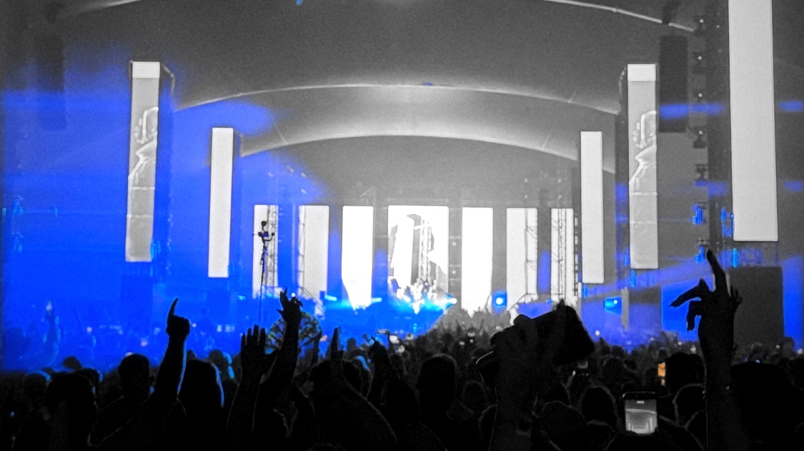
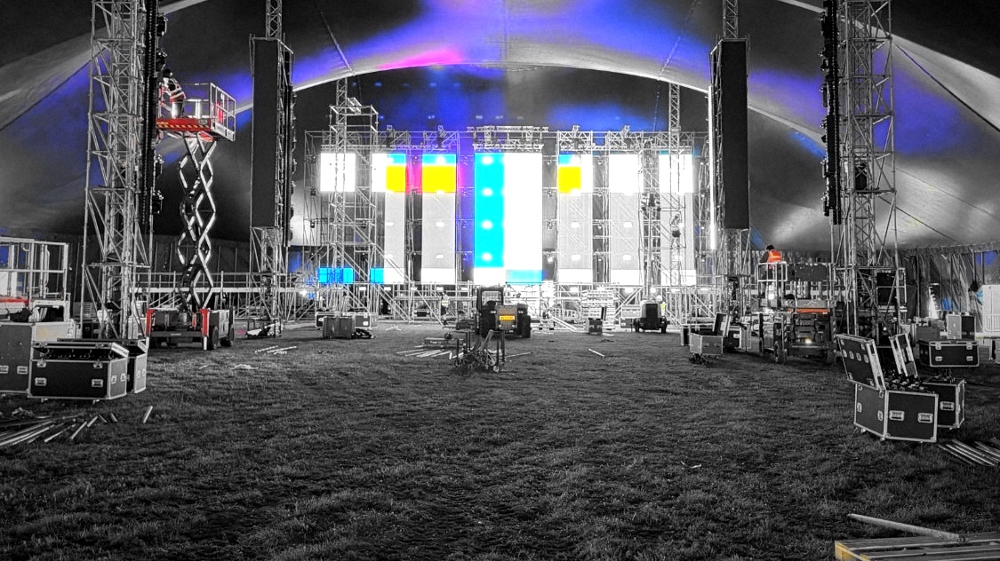
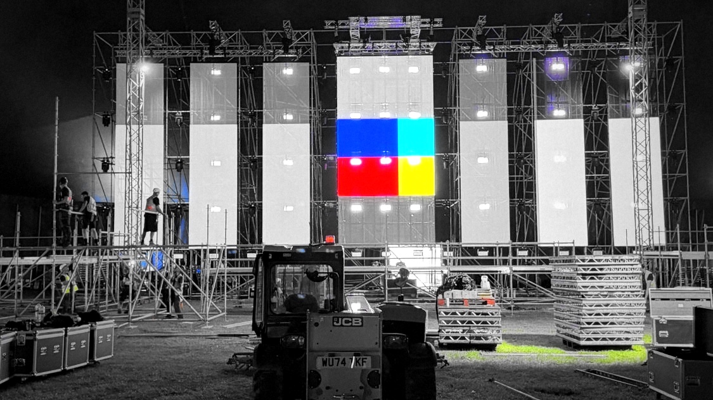
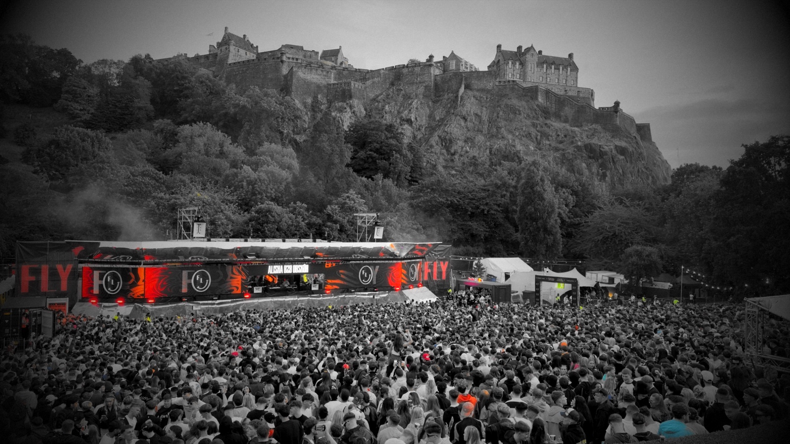
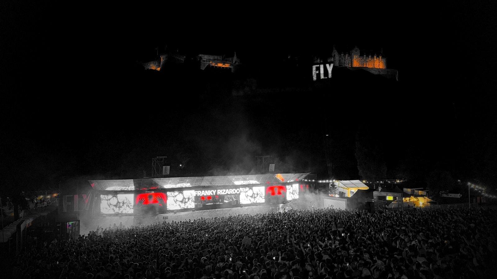
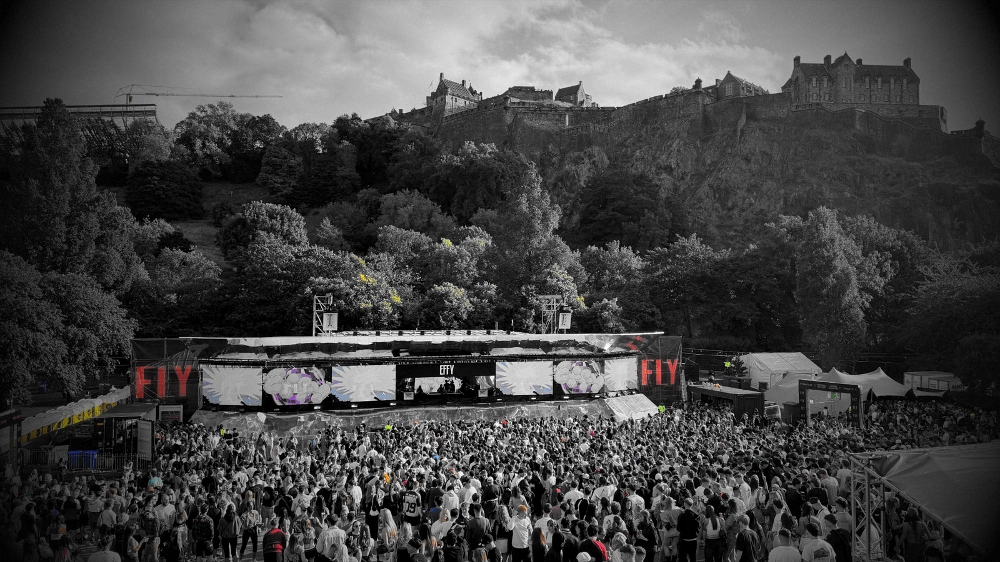
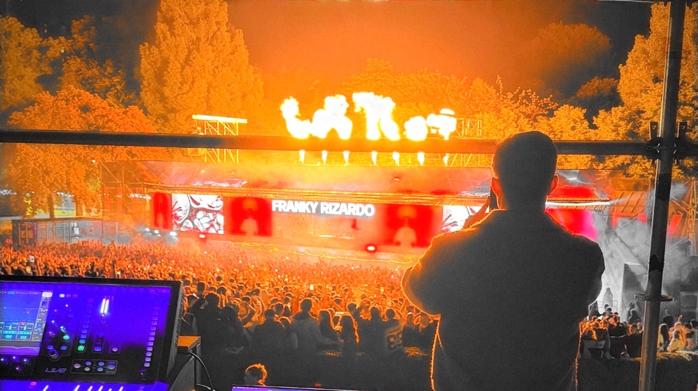
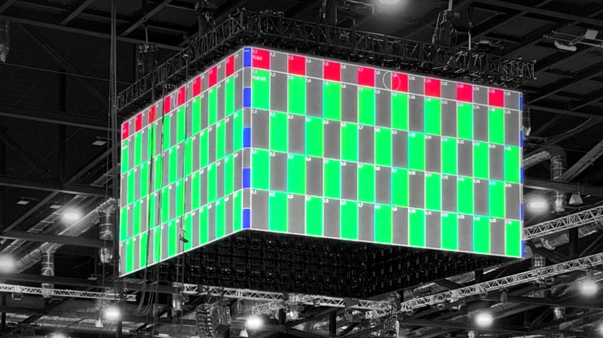
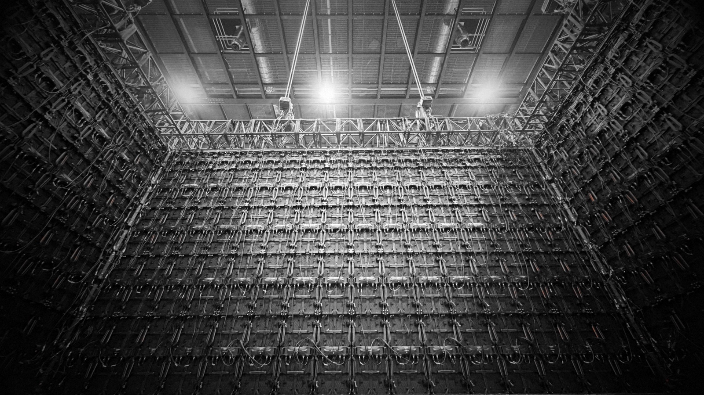

1 Crowd under the tent, hands up
2 Tent build at night, LED columns lit
3 Tent build, test colours, telehandler
4 Edinburgh, daytime crowd and stage
5 Edinburgh at night, castle lit
6 Edinburgh, afternoon, colourful LED
7 From FOH, pyro over the stage
8 Arena LED cube on test grid
9 Inside the cube, looking up